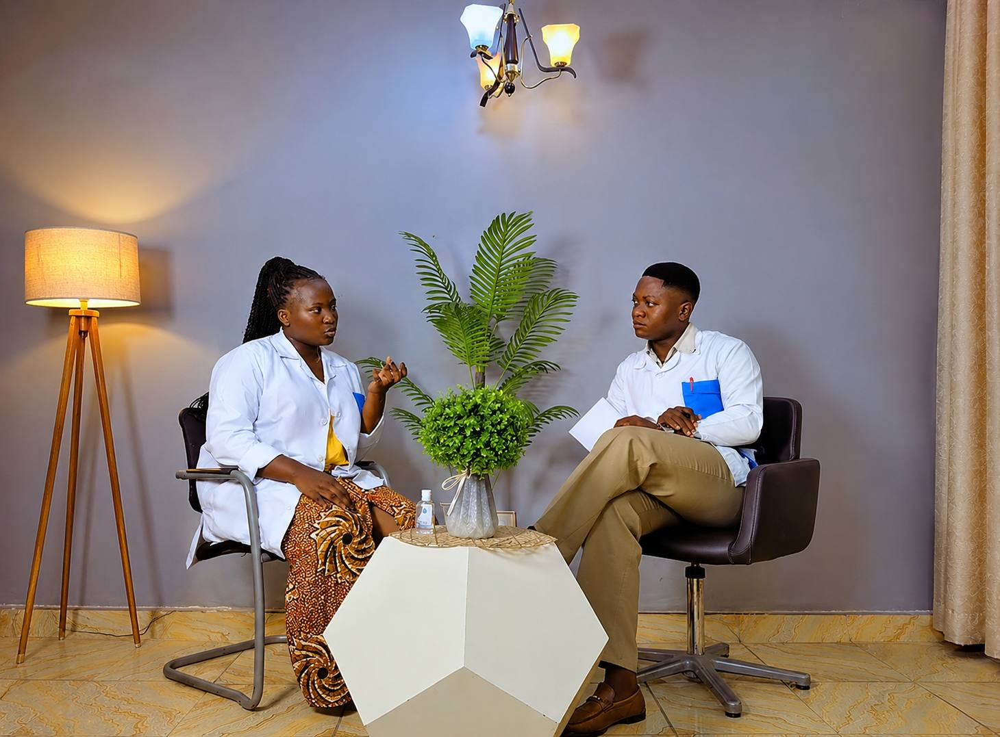

Découvrez notre engagement pour des analyses fiables, rapides et réalisées dans un environnement sécurisé.

D’expertise médicale
Notre laboratoire accompagne chaque patient avec des analyses médicales précises, des équipements modernes et un suivi professionnel adapté aux besoins de chacun.
Grâce à notre équipe expérimentée et à des technologies de pointe, nous garantissons un service médical fiable, rapide et accessible dans un environnement sécurisé.